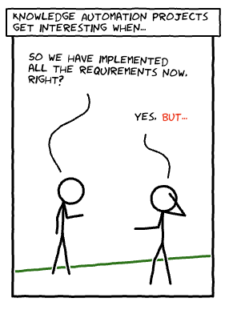
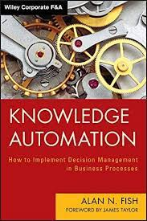
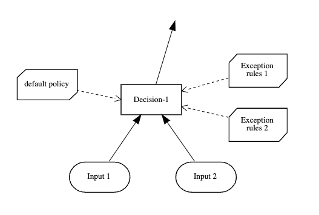
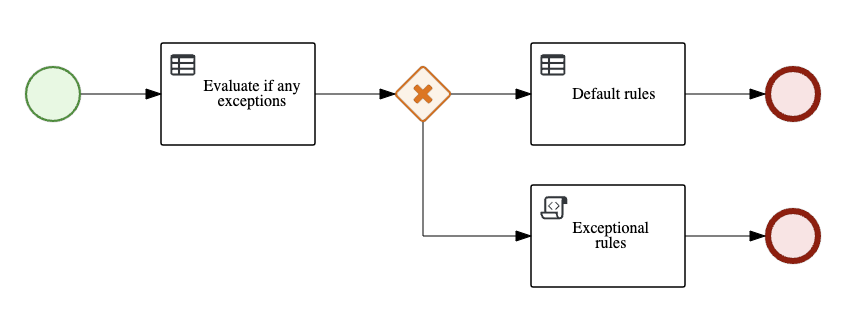
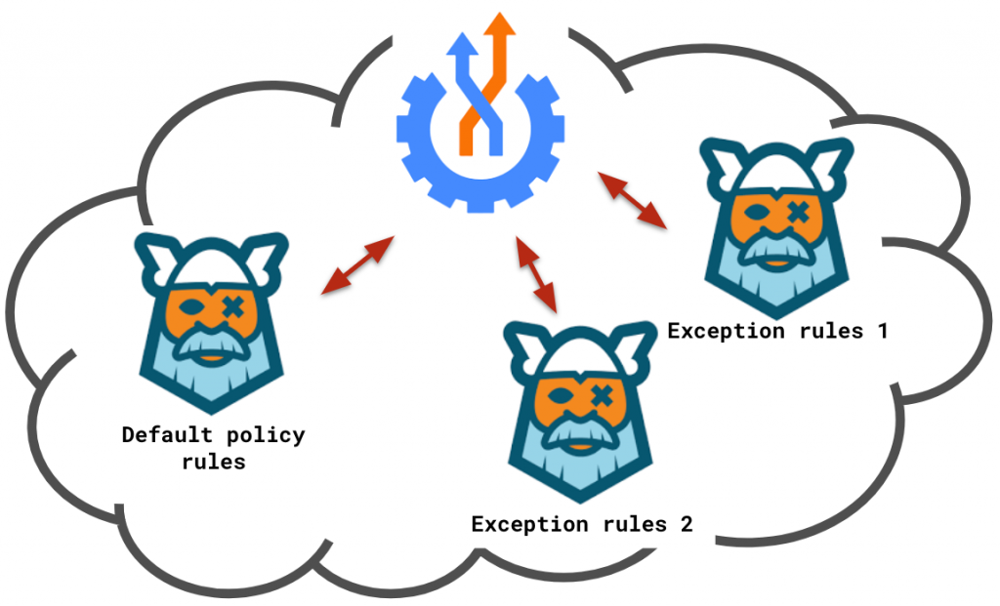

Exceptional rules, with Drools and Kogito
Managing exceptional rules is easy, thanks to Drools and Kogito!

In this use-case, we have a base business process and a default knowledge base with rules, which can be overridden by specific entities or departments as needed.
We actually have several architectural options we could implement!
The simplest architectural option I can think about, draws inspiration from this book by Alan Fish:

Book by Alan N. Fish
which is a great book by the way if you also want to understand the main ideas prequel to the DMN standard!

In a decision node in DMN, we check if any exception is applicable, and we collect the exceptions in a list.
- If the exception list is empty, we apply the default knowledge and rules.
- Otherwise, we apply the rules related to the most relevant exceptions from the list.
You may substitute the BKM nodes with Decision Service, say coming from other DMN models!
Another option is to model this with a combination of BPMN and DMN and rules, the idea is similar:

The default branch applies the default knowledge base and would be followed, unless in the predetermination task we have evaluated we must follow one of the exceptional types of branches.
A final option would be to deploy each knowledge base –the default one, the different exceptional ones– each as its own Kogito microservice on a cloud native environment such as Kubernetes:

Then, you can orchestrate them using a Serverless Workflow, which will be in charge of invoking the needed cloud-native decision service.
As you have seen, managing exceptional rules is easy, thanks to Drools and Kogito!